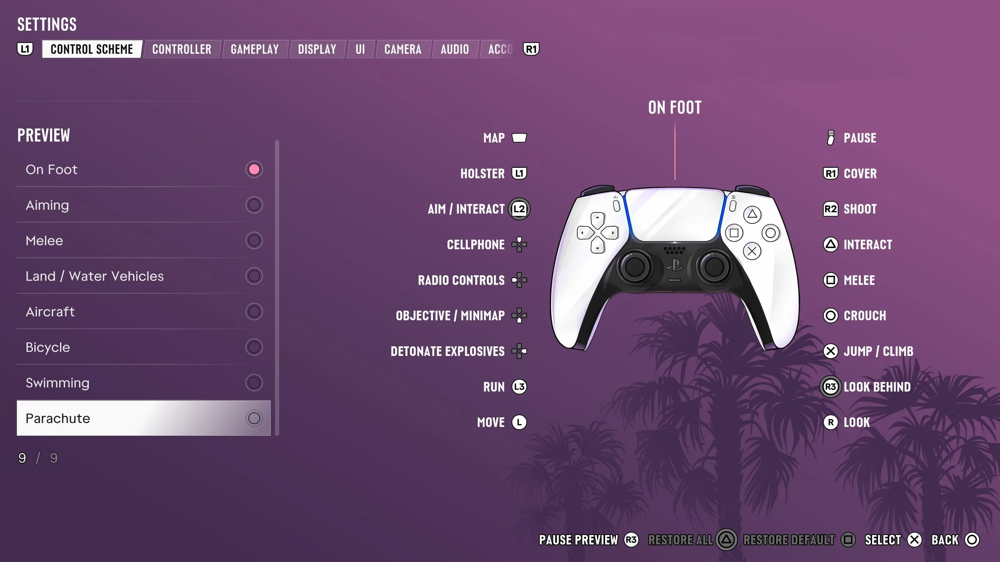

Default and Classic on-foot buttons
Pause and open Settings → Control Scheme. Compare the On Foot and Aiming screens after changing the scheme.
| Action | Default | Classic |
|---|---|---|
| Run or sprint | Left-stick click | X / A |
| Jump or climb | X / A | Square / X |
| Melee | Square / X | Circle / B |
| Crouch | Circle / B | Left-stick click |
Where two buttons appear, the PS5 label is first. The Default tutorial shows one stick click to run and another to sprint.

Map, aiming and driving
If the camera is fighting the stick, test one setting at a time. Start with a small aim movement while standing still, then compare the camera’s follow behavior on the same drive. Keep the aim-assist and camera-follow settings separate.
- Map. The PS5 Default diagram shows the touchpad shortcut. If the shortcut is unreliable, open the map from the pause menu. Xbox players can use Menu and choose Map.
- Aiming and cover. On the documented Default aiming layout, hold L2/LT to aim. The aiming chart shows R1/RB for cover. Settings has separate pages for aim sensitivity and combat accessibility. Check the Aiming chart before using a remapped layout.
- Car radio, lights and handling. Open Control Scheme → Land Vehicles in your active preset and use the in-game prompt. The default driving chart groups radio and vehicle functions on the D-pad, so read the tap or hold prompt before treating the same physical button as a fault.
- Sticks, triggers or a stuck exercise prompt. Controller settings exposes deadzones and PS5 adaptive triggers. Replay the prompt with the default layout or test with another controller if available. Launch players have reported lifting inputs staying on screen without progressing. A repeatable fix is still unverified.

The launch captures support the menus shown above. A reliable general toggle for first-person play has yet to be established in the checked materials.